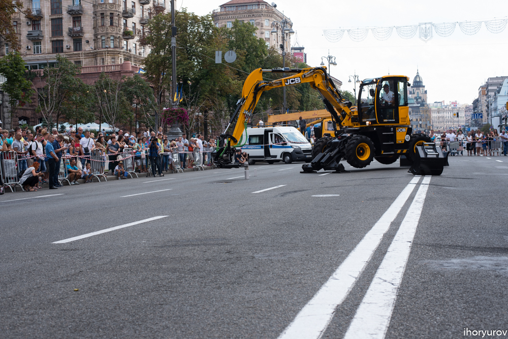
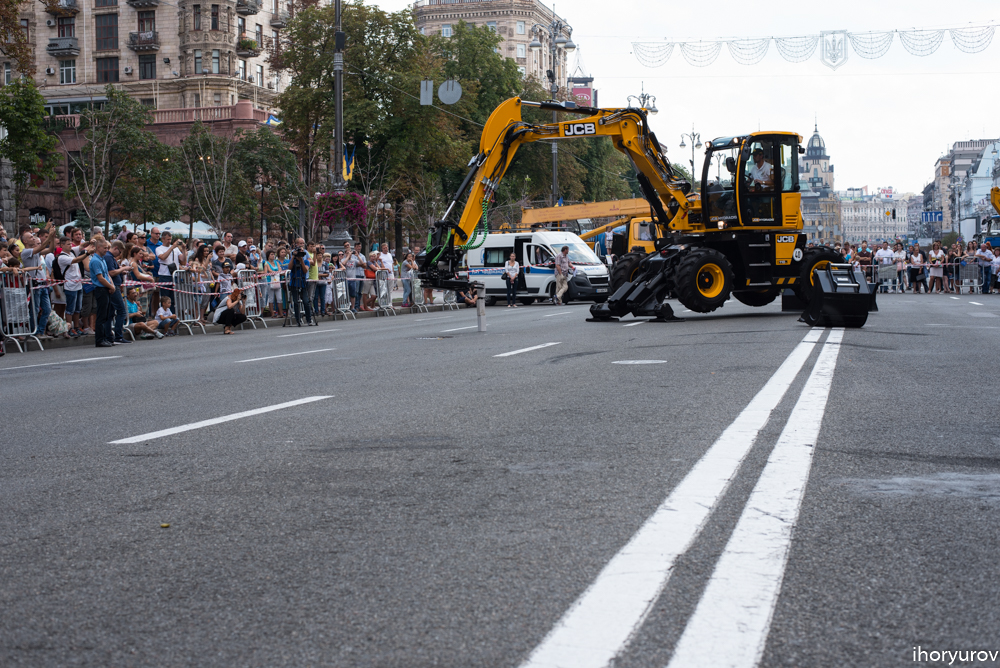
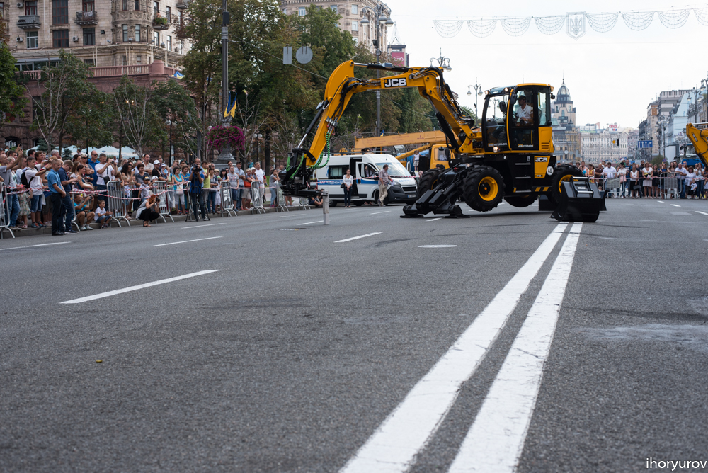
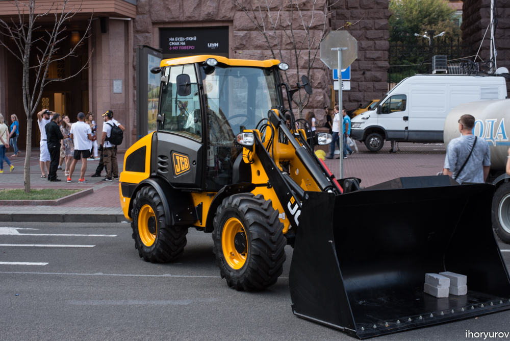

Жах! Танцы экскаваторов на Крещатике 27августа. Часть вторая.
27/08/2017

Ой, совсем забыл сказать о самом главном трюке - как можно открыть экскаватором бутылку. В специальном лотке были установлены бутылки с запечатанными пробками. С помощью огромного ковша нужно было открыть бутылки, как открывалкой, естественно их не повредив. Во дела. Задание было выполнено блестяще. Смотрите сами.
А вот эти бутылки уже открытые поближе. Жесть!
Работники “Киевводоканала”.
Вернемся к трюку с кирпичами. После демонстрации виртуозности движений ковша, последний был самостоятельно (без посторонней помощи) снят и оставлен на асфальте. Далее, в работу пошли щипцы, которыми обычно берут тяжелые трубы больших диаметров. Сейчас нужно было показать на что способна техника и самое главное ее хозяин.

Расставлены кирпичи.
Он поставил торцом два кирпича и сейчас пробует накрыть их сверху третьим. Не простая затея.
Далее еще сложнее. Поставить торцом три кирпича друг на друга.
  Офигеть, еще и поднимает вверх. Супер! Молодец!
В конце Шоу, было фото с работниками Киевводоканала. Молодцы! Спасибо за работу!

В заключении некоторые фото парка техники, представленной на этом конкурсе и отдельных частей. Для ценителей.
Это подножка с зубцами от грязи. В кабине должно быть чисто.
У детворы своя техника :).
До скорого!